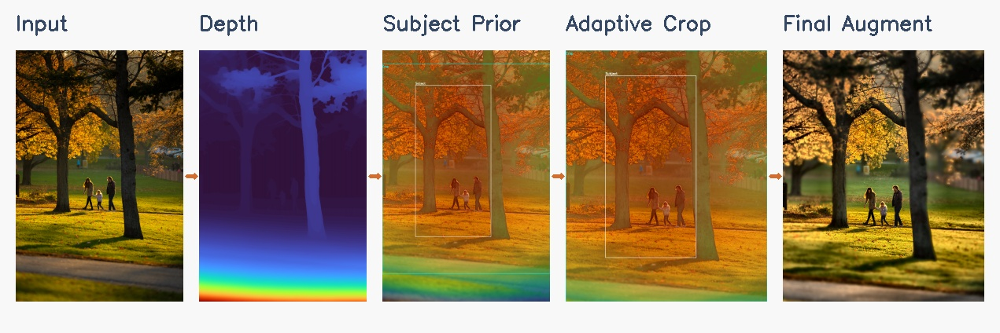
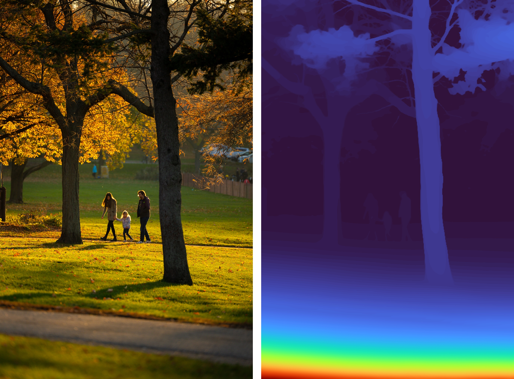
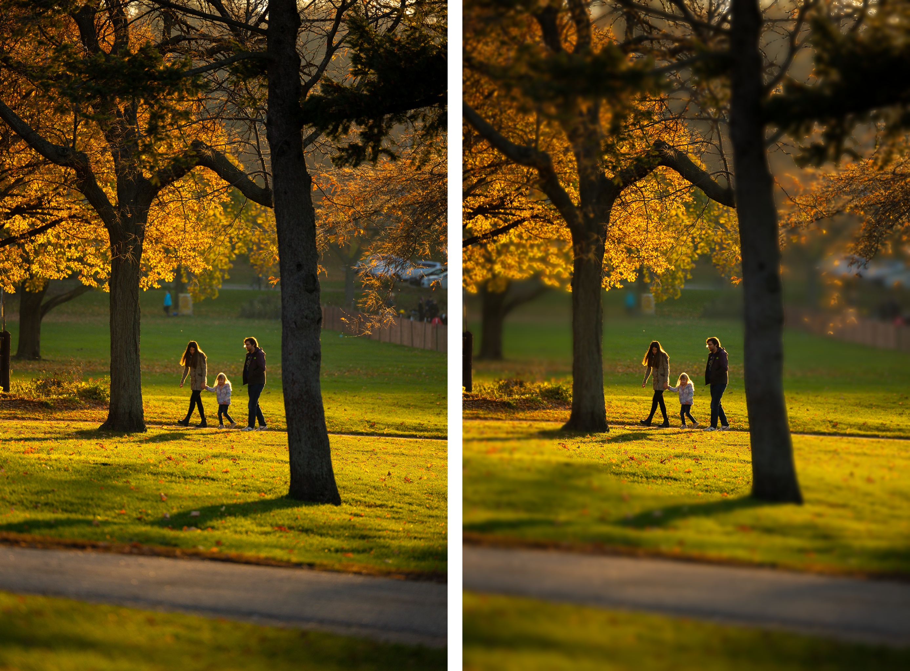
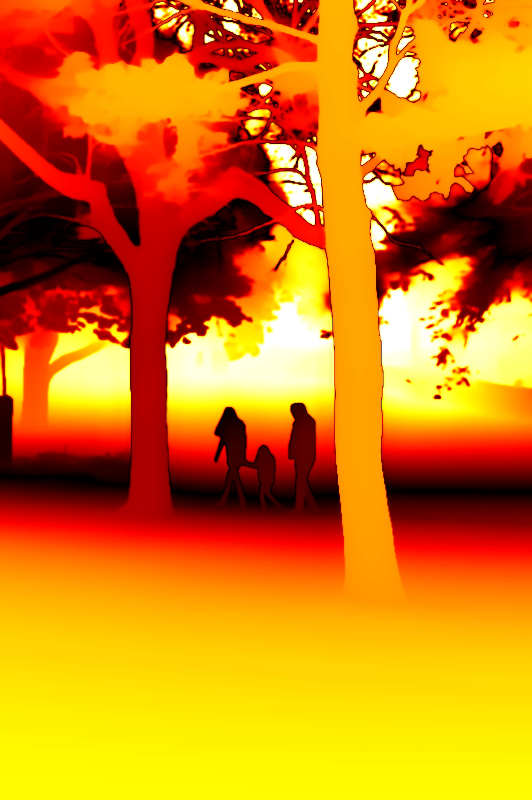
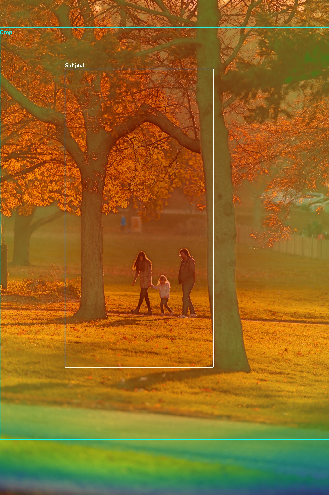
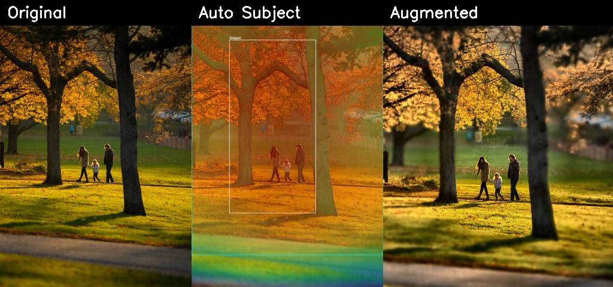
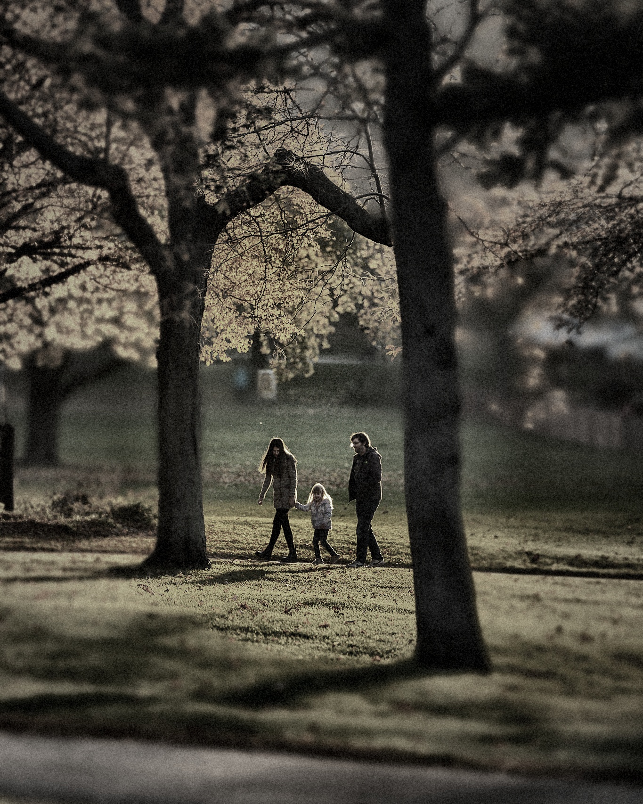
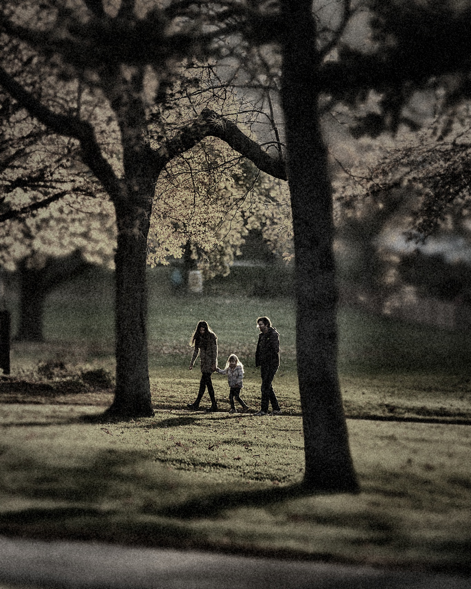
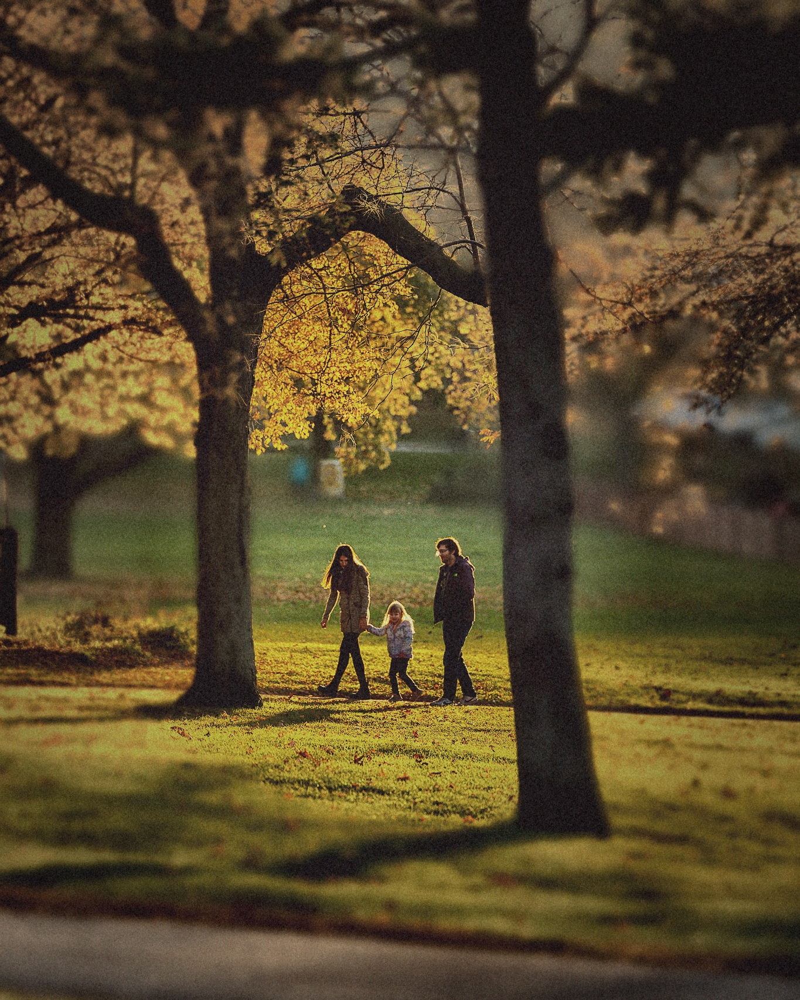

Overview
Many photos fail not because the scene is bad, but because the chosen framing, focus, or style does not match the subject a user actually cares about. Our proposal reframes the task as perceptual post-capture optimization: automatically identify the most important region, emphasize it, and render a more intentional image.
We frame the task as perceptual post-capture optimization: detect the visually important region, organize the composition around it, and render a stronger final image automatically.
- Input: one RGB photograph
- Automatic subject emphasis: depth, contrast, saturation, and center priors
- Composition adjustment: adaptive crop guided by subject placement
- Output: a refocused and photo-enhanced image with clearer visual hierarchy
Pipeline
The demo pipeline below shows the full CS766 flow from the original photo to the final augmented result.

Depth Estimation
We estimate monocular depth with Depth Anything V2 when the environment supports it, and fall back to a heuristic pseudo-depth prior when local torch and torchvision versions are mismatched.
Robust demo pathAutomatic Subject Prior
We combine near-depth preference, local contrast, saturation, edge strength, and a soft center bias to infer which region is most likely to be the intended subject.
No manual click requiredAdaptive Focus and Crop
The subject prior drives automatic focus distance estimation and a crop box that tries to keep the subject comfortably framed while improving balance.
Composition awareStyle Enhancement
We apply lightweight local contrast, color, and detail enhancement, with stronger sharpening concentrated around the automatically selected subject.
Presentation readyMethod Details
Depth and Geometry
Dense depth estimation gives us a rough geometric layout. We smooth and remap the depth field before using it for focus simulation and subject ranking.

Depth-Aware Rendering
We compute a Circle of Confusion map and blend multiple blur layers to produce depth-aware focus effects that strengthen subject separation before the final enhancement step.

Automatic Augmentation
The detected subject prior drives a crop and enhancement pass that directly improves framing, emphasis, and presentation quality in the final image.

Interactive Results
These examples compare the input photo, depth-aware rendering outputs, and the final automatic augmentation stage.
Original vs. Depth Prior
Drag the handle to compare the input photograph against the estimated depth visualization.
Original vs. Refocused
This component uses the estimated focus distance and depth map to synthesize a shallower depth of field.
CoC Visualization
The Circle of Confusion map highlights where the renderer assigns stronger blur.

Automatic Augmentation Result
The left image is the adaptive crop before enhancement. The right image is the final augmented result.
Subject Prior and Crop
The overlay shows the saliency prior, the detected subject box, and the crop selected for final enhancement.

Summary Strip

Depth-of-Field Sweep Across Apertures
These samples show how the renderer responds when the aperture changes.
Extreme background blur
Very shallow depth of field
Strong portrait-style emphasis
Moderate blur
Deeper focus
Minimal synthetic blur
Automatic Focus Sweep
This animation now shows two synchronized views: the current focus render on the left and the final augmented result on the right, so the change in focus and the enhancement pass are both visible.

Implementation
Core Components
- Depth Anything V2 or pseudo-depth fallback for robust demo execution
- Depth-aware Circle of Confusion renderer for controllable focus effects
- Automatic subject saliency from depth, contrast, saturation, and center priors
- Adaptive crop and subject-aware enhancement for final photo augmentation
Command Examples
Film Style Presets
Beyond depth-of-field simulation, the pipeline supports personalised colour grading inspired by classic film stocks and cinematic looks. Each preset adjusts tone curves, saturation, shadow and highlight tints, spatially-correlated film grain, and a subject-anchored vignette — all applied after the subject-aware augmentation stage so the look is consistent regardless of composition.
Warm skin tones · lifted shadows · fine grain
Punchy saturation · cool shadows · landscape look
Pastel · airy · cool cast · portrait favourite
Tungsten balanced · halation glow · neon & night

Classic B&W · medium grain · wide exposure latitude

High contrast · coarse grain · gritty documentary
Hollywood blockbuster · warm highlights · cool shadows

Lifted blacks · warm cast · worn film feel
Challenges and Next Steps
Current Challenges
- Monocular depth still introduces edge errors around thin structures and cluttered scenes.
- The subject heuristic is effective for demos, but it is not yet learned end-to-end from user preference data.
- Automatic cropping can fail on unusual compositions where the intended subject is not the most salient region.
Future Work
- Train a learned importance predictor for subject emphasis rather than using heuristics alone.
- Add multiple target aspect ratios and platform-specific crop presets.
- Introduce stronger style controls so users can choose portrait, editorial, or cinematic output modes.
- Connect the pipeline to a simple web upload interface for live demos.